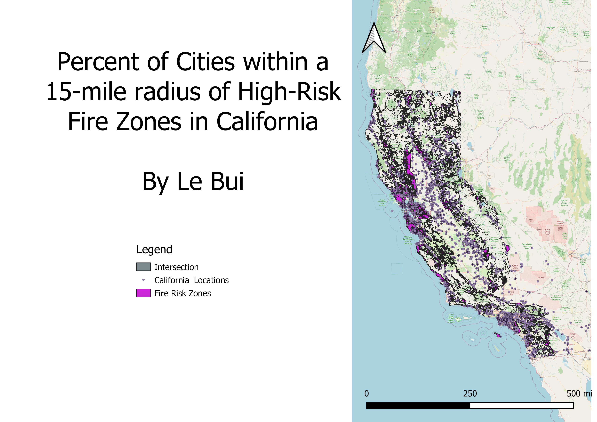

The research question was "how many cities in California are within a 15-mile radius of a high-risk fire zone." I did this by first putting a buffer around the cities of approximately 15 miles. Then, I did an intersect function between the buffers and the fire risk zones. Finally, when putting the map together, I removed the buffer because they essentially flooded the map.
 Link to fire data. Link to city data.